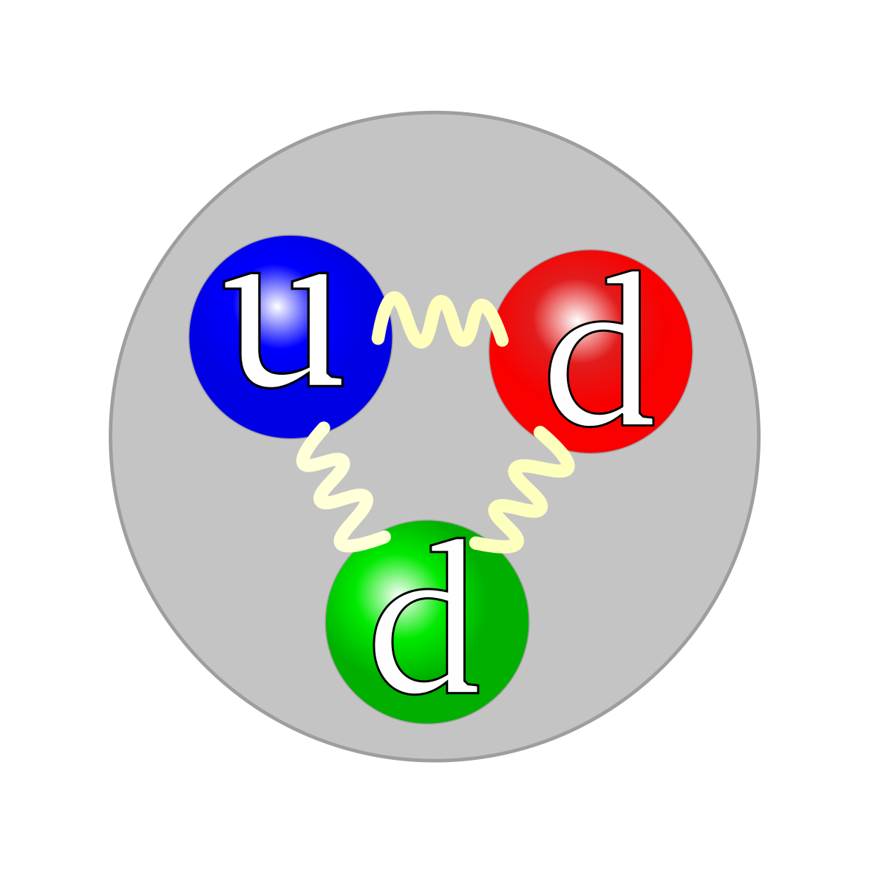

Hydrogen Embrittlement and Neutron Scattering
- 2018 January 15
- Read more
|
Matthew Connolly
Physicist Fatigue and Fracture Group Applied Chemicals and Materials Division Material Measurement Laboratory National Institute of Standards and Technology |
 Research Interests:
My current research focus is on the study of hydrogen embrittlement and hydrogen-assisted fatigue crack growth in pipeline steels.
In an effort to elucidate hydrogen-assisted damage mechanisms, I am using synchrotron x-ray and neutron scattering techniques to
measure the stress/strain field, dislocation density, material phase changes, phonon spectra, and hydrogen concentration near fatigue crack tips.
I am also interested in other corrosive environments (e.g. radiation, CO2, hydrogen isotopes) as well as fracture resistant materials
(e.g. high entropy alloys). For physical parameters which are difficult to determine experimentally (e.g. H2 diffusion rates), I use ab initio,
Monte Carlo, and molecular dynamics simulations of the physical systems. I am currently involved in developing a neutron Transmission Bragg Edge Strain
Tensor Tomography (TBESTT) measurement technique, which will provide full 3D strain tensor fields in structural materials. I am interested in developing
novel experimental apparatus (e.g. pressure vessels, load frames, temperature control) for in situ strain measurements.
Publications
| Contact Information: |
|
e-mail: |
matthew.connolly@nist.gov |
Background Information:
I received my B.S. in physics from the University of Northern Iowa.
As an undergraduate I worked on two research projects. One, working with Dr. Michael Roth on
``Molecular Dynamics Simulations of Hexane on Graphite at Various Coverages'' and another with
Dr. Fred Behroozi which involved automating laser interferometry measurements of surface tension using LabView.
I received my Ph.D. in Physics in 2014 at the University of Missouri, in Columbia, MO, working with Dr. Carlos Wexler . My dissertation was on ``Sorbate Structure and Dynamics Effect on Sorption Properties: Theory and Experiment,'' where I used molecular dynamics, Monte Carlo, and neutron scattering to study hydrogen adsorption on carbon-based adsorbents.